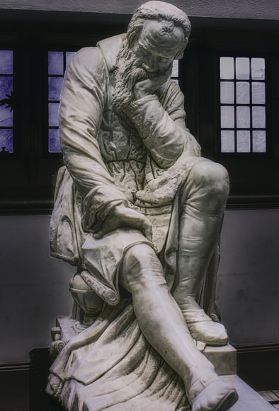

첫 번째 주제: 인식론 우리의 지식은 어떻게 가능한가? 몸, 마음, 그리고 철학이란? 언어와 세계는 어떤 관계인가?
두 번째 주제: 사회 및 역사철학 노동은 자유의 실현인가? 기술문명은 인간을 해방할 것인가? 역사는 진보하는가? 정의란 무엇인가? 사회와 개인이란 무엇인가? 유교적 근대화와 개인의 조화는 가능한가?
세 번째 주제: 윤리학 양심, 선천적인가 후천적인가? 인간은 본래 선한가 악한가? 삶과 죽음, 그 너머는? 욕망이란 무엇인가?